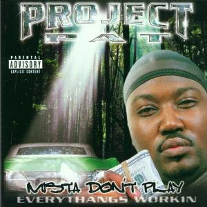
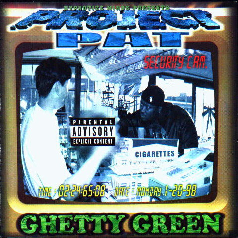

Project Pat began his career with appearances on his brother Juicy J's
early releases with DJ Paul in the early 1990s. After serving several
years in prison for robbery charges and disappearing from recording, he
re-emerged in 1999 with the solo album Ghetty Green, released on his
brother's Hypnotize Minds label. He became an unofficial member of Juicy
and Paul's newly established group Three 6 Mafia, and first gained
mainstream attention when he provided the hook for the group's hit single
"Sippin' on Some Syrup" in 2000.
Top 3 Singles
1. Don't Save Her

Album: Mista Don't Play: Everythangs Workin
Released: 2001
Genre: Hip-Hop/Rap
2. Chickenhead
Album: Mista Don't Play: Everythangs Workin
Released: 2001
Genre: Hip-Hop/Rap
3. Project Pat Out There

Album: Ghetty Green
Released: 1999
Genre: Hip-Hop/Rap